วิธีใช้ พร้อมแจ้งน้ำท่วม
มีอันตรายตอนนี้ ไม่ต้องอ่านหน้านี้ โทรเลย
เว็บนี้คืออะไร
titanth.com/flood เป็นเว็บฟรีที่ช่วยเรียงข้อความขอความช่วยเหลือให้ครบในข้อความเดียว แล้วคุณโทรหรือกดส่งเอง ใช้ได้ทุกจังหวัด ไม่ต้องสมัคร
✅ ทำอะไรได้
- ปุ่มโทร 1784, 1669 และ 199 อยู่บนสุดของหน้า
- เตรียมข้อความตำแหน่ง ให้คุณส่งทาง LINE ปภ. เอง
- กรอกเท่าที่รู้ ได้ข้อความเดียวที่ครบ ไว้อ่านให้เจ้าหน้าที่ฟังหรือส่งต่อ
- ดูคำเตือนภัยของหน่วยงานรัฐรายจังหวัด
❌ ไม่ใช่อะไร
- ไม่ใช่เว็บหน่วยงานรัฐ และไม่ได้ทำร่วมกับหน่วยงานใด
- เว็บไม่ส่งเรื่องให้ใคร คุณต้องโทรหรือกดส่งเอง
- ไม่มีทีมเฝ้ารับเรื่องจากเว็บ และไม่รับประกันว่าจะมีคนมาช่วย
- ไม่รับเงินบริจาค ไม่ขอเงินจากใคร
เหตุที่ทำ: ตอนตกใจ คนเราอาจลืมบอกข้อมูลสำคัญ เช่น จุดสังเกตหรือเบอร์โทรกลับ ถ้าข้อมูลไม่ครบ เจ้าหน้าที่อาจหาตัวได้ยากขึ้น ผู้จัดทำจึงทำเครื่องมือนี้ในนามส่วนตัว ให้ใช้ฟรี เพื่อช่วยคนที่เจอน้ำท่วม ไม่ได้ทำเพื่อขายอะไร
ข้อมูลที่กรอกอยู่ในโทรศัพท์ของคุณ จนกว่าคุณจะคัดลอก แชร์ หรือส่งเอง ภาพในหน้านี้ถ่ายจากเว็บจริงเมื่อ 27 ก.ย. 2569 ข้อมูลที่กรอกในภาพเป็นตัวอย่าง ส่วนคำเตือนภัยในภาพเป็นประกาศจริง ณ เวลาที่ถ่าย
1มีอันตราย โทรก่อน
ปุ่มโทรอยู่บนสุดของหน้า กดแล้วโทรออกได้ทันที
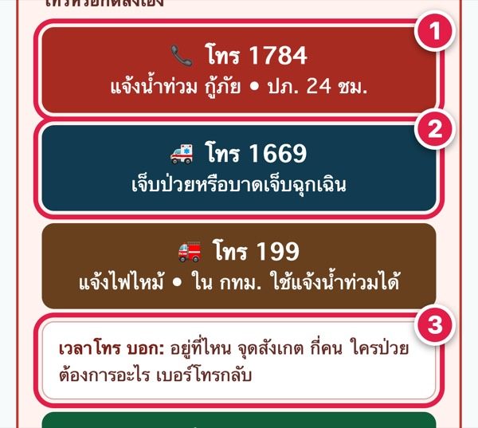
- 11784 แจ้งน้ำท่วม ขอกู้ภัย (ปภ. รับสาย 24 ชม.)
- 21669 เจ็บป่วยหรือบาดเจ็บฉุกเฉิน
- 3เวลาโทร บอก: อยู่ที่ไหน จุดสังเกต กี่คน ใครป่วย ต้องการอะไร เบอร์โทรกลับ
2ส่งตำแหน่งให้ ปภ. ทาง LINE
ถ้าอยู่ที่เกิดเหตุ กดปุ่มเขียว “📍 ใช้ตำแหน่งฉัน” แล้วกดอนุญาตให้ใช้ตำแหน่ง
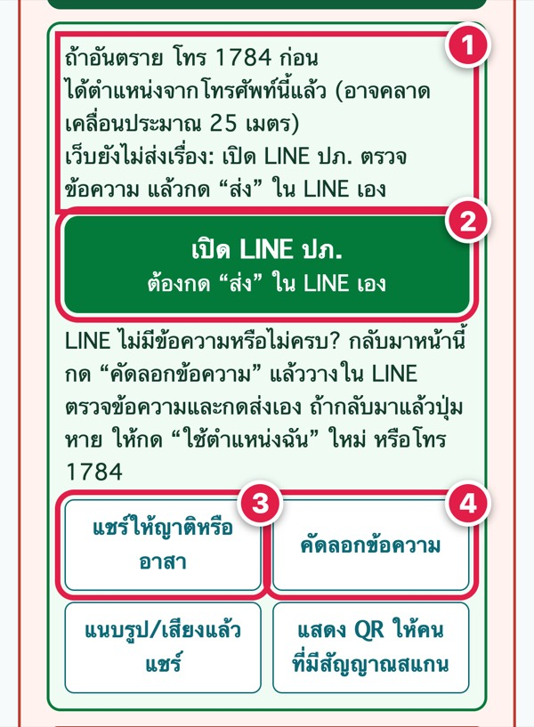
- 1เว็บเตรียมข้อความตำแหน่งให้ แต่ยังไม่ได้ส่ง
- 2กด “เปิด LINE ปภ.” ตรวจข้อความ แล้วกด “ส่ง” ใน LINE เอง
- 3แชร์ให้ญาติหรืออาสาช่วยส่งต่อก็ได้
- 4ถ้าใน LINE ไม่มีข้อความ กลับมากด “คัดลอกข้อความ” แล้วไปวางเอง
3ไม่มีสัญญาณ ให้คนอื่นช่วยส่ง
กด “แสดง QR ให้คนที่มีสัญญาณสแกน”
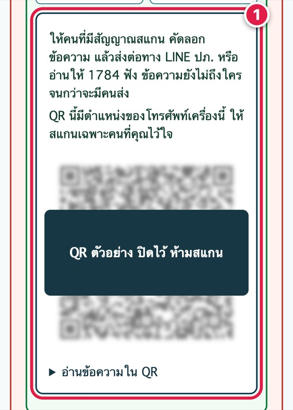
- 1ให้คนที่มีสัญญาณและคุณไว้ใจสแกน แล้วส่งต่อทาง LINE ปภ. หรืออ่านให้ 1784 ฟัง
- !ข้อความยังไม่ถึงใคร จนกว่าจะมีคนส่ง ถ้ายังโทรได้ ให้โทร 1784 ก่อน
4อยากให้ข้อมูลครบ กรอกเท่าที่รู้
เลื่อนลงมาที่ “เตรียมข้อความขอความช่วยเหลือน้ำท่วม”
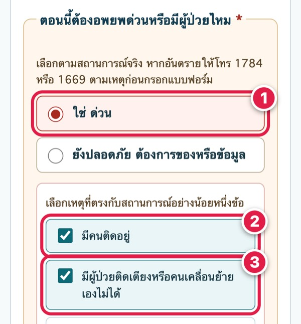
- 1ตอบก่อนว่าต้องอพยพด่วนหรือมีผู้ป่วยไหม
- 2เลือกเหตุที่ตรงกับตอนนี้ เช่น มีคนติดอยู่
- 3มีผู้ป่วยติดเตียงหรือคนที่เคลื่อนย้ายเองไม่ได้ ให้เลือกด้วย
5บอกที่อยู่ให้หาเจอ
ช่องที่มี * ต้องกรอก ช่องอื่นกรอกเท่าที่รู้
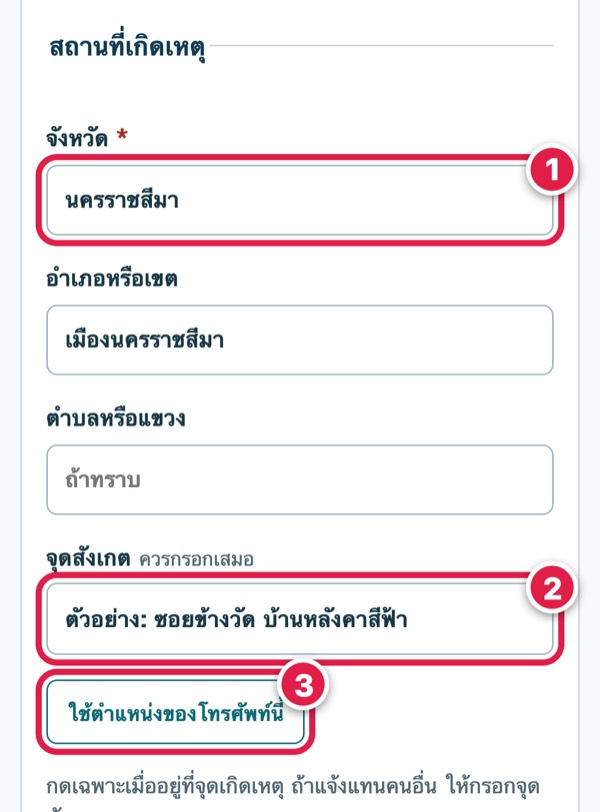
- 1เลือกจังหวัด (อำเภอ ตำบล ถ้าทราบ)
- 2จุดสังเกต ควรกรอกเสมอ เช่น ซอย วัด ร้าน สีหลังคา
- 3“ใช้ตำแหน่งของโทรศัพท์นี้” เฉพาะเมื่อคุณอยู่ที่เกิดเหตุ
6กี่คน เบอร์โทรกลับ แล้วบันทึก
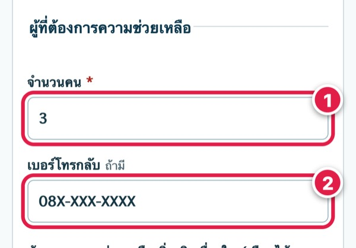
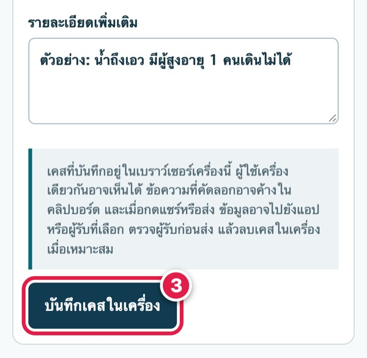
- 1จำนวนคนที่ต้องการความช่วยเหลือ
- 2เบอร์โทรกลับ ถ้ามี
- 3กด “บันทึกเคสในเครื่อง” ข้อมูลอยู่ในโทรศัพท์ของคุณ ยังไม่ได้ส่งไปไหน
7ได้ข้อความเดียวที่ครบ
อ่านให้เจ้าหน้าที่ 1784 ฟังได้ทันที
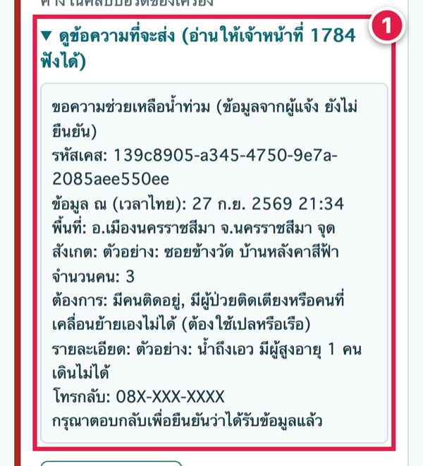
- 1มีเวลา พื้นที่ จุดสังเกต จำนวนคน สิ่งที่ต้องการ และเบอร์โทรกลับ ครบในข้อความเดียว
8ส่งต่อด้วยตัวเอง
เลือกทางที่สะดวก แล้วดูคำตอบจากปลายทาง
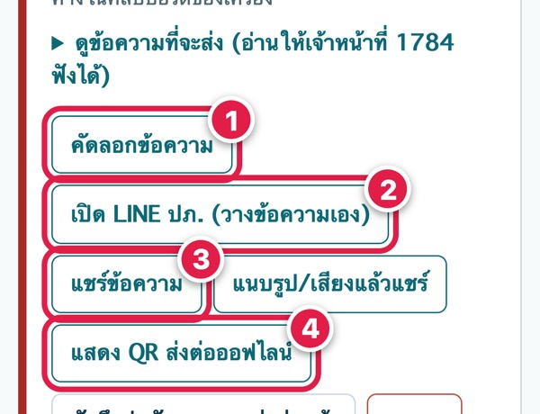
- 1คัดลอกข้อความ ไปวางในแชตหรือ SMS
- 2เปิด LINE ปภ. แล้ววางข้อความ กดส่งเอง
- 3แชร์ให้ญาติ อาสา หรือกลุ่ม LINE
- 4แสดง QR ให้คนที่มีสัญญาณช่วยส่ง
ถ้าส่งแล้วยังไม่มีใครตอบ และมีอันตราย ให้โทร 1784 หรือ 1669
อยากช่วยเพื่อนบ้าน
เปิด titanth.com/flood-neighbors/ สร้างข้อความเสนอช่วย ไม่ต้องสมัคร แล้วแชร์เองในกลุ่มของคุณ
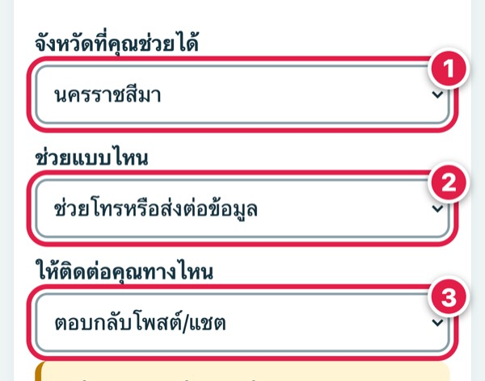
- 1เลือกจังหวัดที่คุณช่วยได้
- 2เลือกว่าช่วยแบบไหน เช่น ช่วยโทรหรือส่งต่อข้อมูล
- 3เลือกให้คนติดต่อคุณทางไหน ค่าเริ่มต้นคือตอบกลับในโพสต์หรือแชต ไม่ต้องใส่เบอร์
- !กด “แชร์ข้อความ” หรือ “คัดลอกข้อความ” แล้วโพสต์เอง เว็บไม่ได้ส่งหรือจับคู่ให้ใคร
ถ้าจะไปช่วย อย่าลงน้ำที่ไหลเชี่ยว อย่าเข้าใกล้สายไฟ อย่าไปคนเดียว และอย่าส่งเงินให้คนที่ไม่รู้จัก
ติดตามข่าวและเตรียมตัว
ดูคำเตือนภัยจากหน่วยงานรัฐ
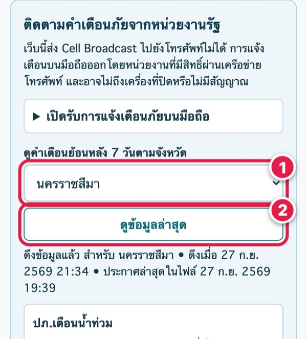
- 1เลือกจังหวัด
- 2กด “ดูข้อมูลล่าสุด” เห็นคำเตือนย้อนหลัง 7 วัน และเวลาที่ดึงข้อมูลทุกครั้ง ไม่พบประกาศไม่ได้แปลว่าปลอดภัย
ดูข้อมูลน้ำและฝนจากหน่วยงานทางการ
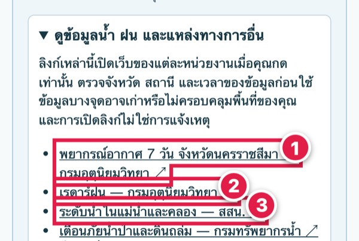
- 1พยากรณ์อากาศ 7 วันของจังหวัดที่เลือก (กรมอุตุนิยมวิทยา)
- 2เรดาร์ฝน (กรมอุตุนิยมวิทยา)
- 3ระดับน้ำในแม่น้ำและคลอง (สสน.) ทุกลิงก์พาไปเว็บของหน่วยงานเอง
ก่อนน้ำมา และหลังน้ำลด
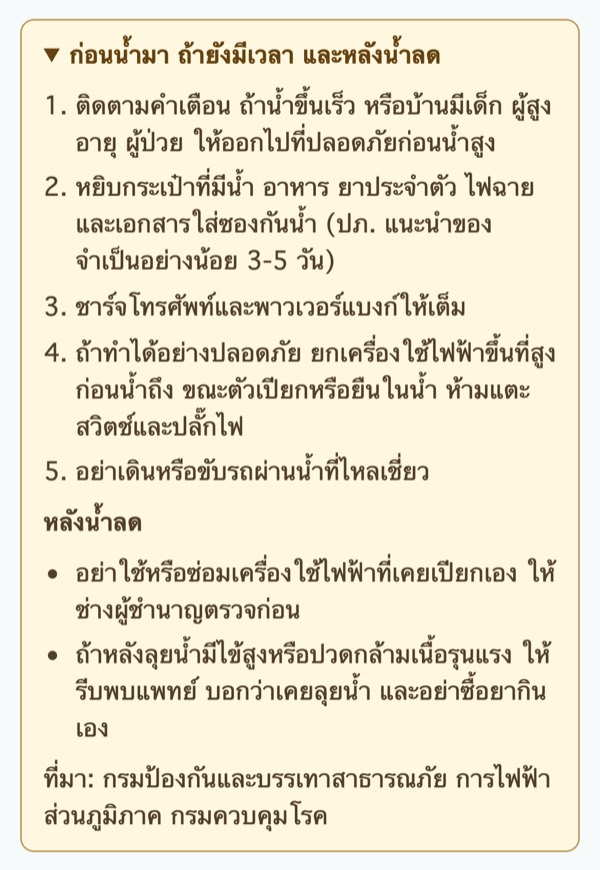
ระบบทำอะไรได้แล้วบ้าง ดูได้ทุกเวลา
หน้า titanth.com/flood/status/ อ่านสถานะสดเมื่อเปิดหน้า แสดงเฉพาะตัวเลขรวม ไม่มีชื่อ เบอร์ หรือตำแหน่งของใคร
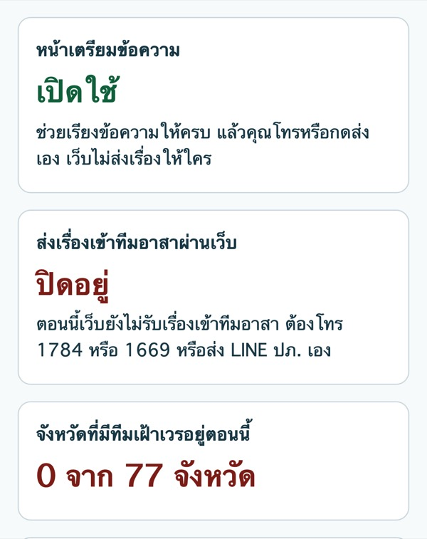
| หน้าเตรียมข้อความ | เปิดใช้ ทุกจังหวัด |
|---|---|
| หน้าเสนอช่วยเพื่อนบ้าน | เปิดใช้ ช่วยเขียนข้อความให้คนแชร์เอง ไม่จับคู่ และไม่ได้ตรวจตัวตนของคนที่เสนอช่วย |
| ส่งเรื่องเข้าทีมอาสาผ่านเว็บ | ปิดอยู่ คุณต้องโทรหรือส่งเองทุกครั้ง |
| หน้าทีมอาสา | ยังไม่รับเคสจริง สำหรับทีมที่ได้รับเชิญเท่านั้น |
สำหรับหน่วยงาน มูลนิธิ และอาสาสมัคร
หากเห็นว่าเป็นประโยชน์ นำไปใช้ได้ทันที ไม่ต้องสมัครหรือแจ้งผู้จัดทำ
- แชร์ลิงก์ titanth.com/flood ให้ประชาชนในพื้นที่
- โพสต์หรือส่งต่อภาพคู่มือด้านล่างได้เลย ข้อมูลที่กรอกในภาพเป็นตัวอย่าง ไม่ใช่เหตุจริง
- ย้ำกับประชาชนว่า ถ้ามีอันตรายให้โทรขอความช่วยเหลือก่อนเสมอ เช่น 1784, 1669 หรือเบอร์รับแจ้งเหตุของหน่วยงานในพื้นที่
- ถ้าต้องการภาพ “บอกให้ครบในข้อความเดียว” ที่ใส่เบอร์รับแจ้งเหตุของหน่วยงานท่านเอง แจ้งผู้จัดทำทางอีเมล
ดาวน์โหลด
ภาพคู่มือ 14 ภาพ ขนาด 1080×1350 สำหรับโพสต์หรือส่งทาง LINE:
- ปก
- 1 โทรก่อน
- 2 ตำแหน่ง LINE
- 3 ไม่มีสัญญาณ
- 4 กรอกเท่าที่รู้
- 5 ที่อยู่
- 6 กี่คน บันทึก
- 7 ข้อความ
- 8 ส่งต่อ
- คำเตือนภัย
- ข้อมูลน้ำ ฝน
- ก่อน/หลังน้ำ
- สถานะระบบ
- ช่วยเพื่อนบ้าน


ติดต่อ
วัชระ แสงจันทร์ไทย (TITANTH) บุคคลธรรมดา · jamelight@titanth.com
อีเมลนี้ไม่ใช่ช่องทางแจ้งเหตุ และไม่มีคนเฝ้าตลอดเวลา ถ้ามีอันตรายต่อชีวิต โทร 1784 หรือ 1669